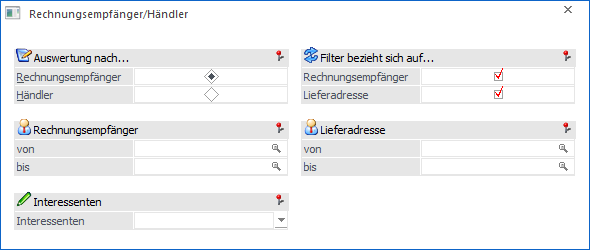

In der Praxis muss es nicht immer der Fall sein, dass der Rechnungsempfänger gleich der Lieferadresse ist. Für all jene Kunden / Lieferanten kann an dieser Stelle eine übersichtliche Liste ausgegeben werden (die Rechnungsadresse wird im Register "FAKT" des Personenkontenstamms hinterlegt).
Des Weiteren kann hier eine Liste der Händler mit seinen dazugehörigen Konten (inkl. Interessenten) ausgegeben werden (die Händlerkontonummer wird ebenfalls im Register "FAKT" des Personenkontenstamms hinterlegt).
Der Aufruf der Liste erfolgt über den Menüpunkt…
1 WinLine FAKT
1 Auswertungen
1 Stammdatenlisten
1 Rechnungsempfänger/Händler

Ø Auswertung nach…
Die Auswertung kann wahlweise nach Rechnungsempfänger oder Händler durchgeführt werden.
Ø Rechnungsempfänger / Händler
An dieser Stelle kann, je nach Einstellung "Auswertung nach", eine Selektion auf die Rechnungsempfänger oder Händler vorgenommen werden.
Ø Interessenten
Über die Auswahlliste kann definiert werden, ob auch Interessenten auf der Auswertung ausgegeben werden sollen. Folgende Varianten stehen zur Verfügung:
ü 0 - ohne Interessenten
ü 1 - mit Interessenten
ü 2 - nur Interessenten
Ø Filter bezieht sich auf…
Wird ein Filter für die Ausgabe hinterlegt, so kann hier entschieden werden, ob sich dieser auf die Rechnungsempfänger bzw. Händler, auf die Lieferadresse oder auf beides bezieht.
Ø Lieferadresse
An dieser Stelle kann eine Einschränkung auf einen bestimmten Kontenbereich der Lieferadresse erfolgen.
Buttons

Ø Ausgabe Bildschirm
Mit Hilfe des Buttons "Ausgabe Bildschirm" oder der Taste F5 wird die Auswertung am Bildschirm ausgegeben.
Ø Ausgabe Drucker
Durch Anwahl des Buttons "Ausgabe Drucker" wird die Auswertung am Drucker ausgegeben.
Ø Ende
Durch Anwahl des Buttons "Ende" bzw. der Taste ESC wird die Auswertung geschlossen.
Ø Filter bearbeiten
Durch Anklicken des Buttons "Filter bearbeiten" kann die Auswertung nach frei definierbaren Kriterien eingeschränkt werden.